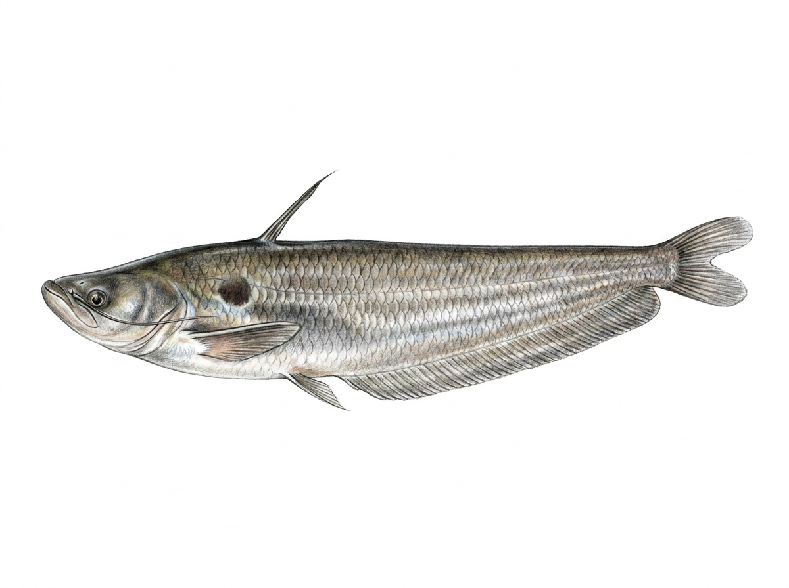

Butter Catfish
Ompok bimaculatus
The Butter Catfish is a freshwater catfish native to Sri Lanka and other parts of South Asia. In Sri Lanka, it is found in rivers, streams, lakes, reservoirs, and floodplain wetlands, especially in areas with slow-moving water, submerged vegetation, and soft muddy or sandy bottoms. It has a slender, laterally compressed body with a soft appearance and is known for its smooth, scaleless skin. This species is mainly active during the evening and night, using its long barbels to locate prey in low-light conditions. It feeds on small fish, aquatic insects, crustaceans, worms, and other small aquatic animals. The Butter Catfish is generally a shy fish that prefers hiding among aquatic plants, roots, and submerged structures during the day. It is an important native predator in Sri Lanka’s freshwater ecosystems and contributes to maintaining balance within aquatic food chains.